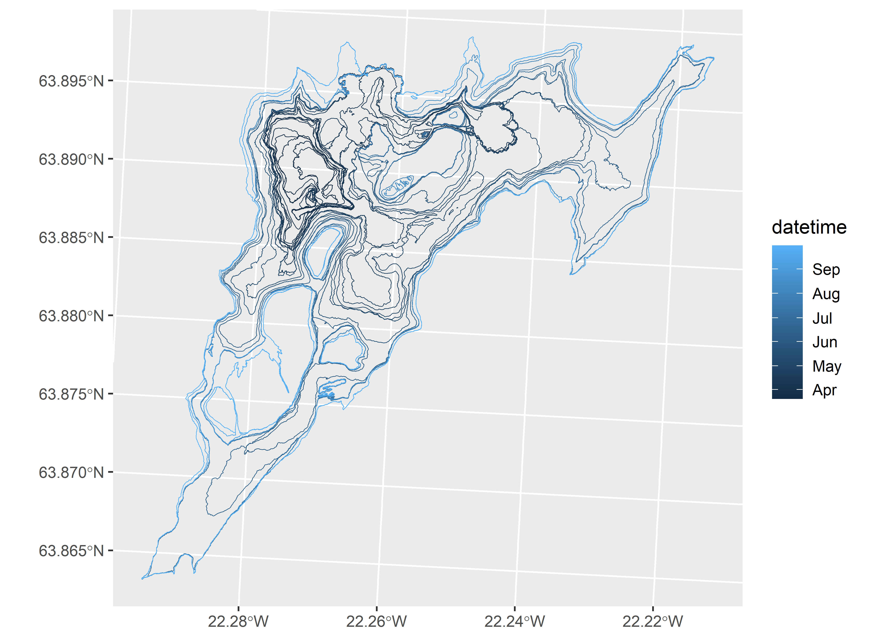
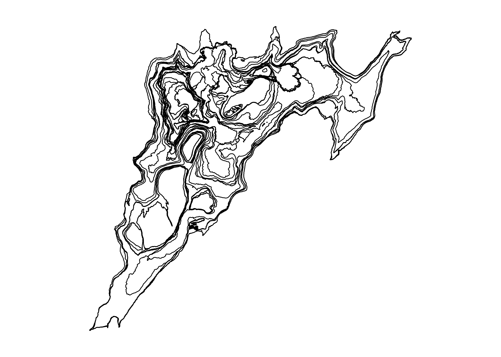
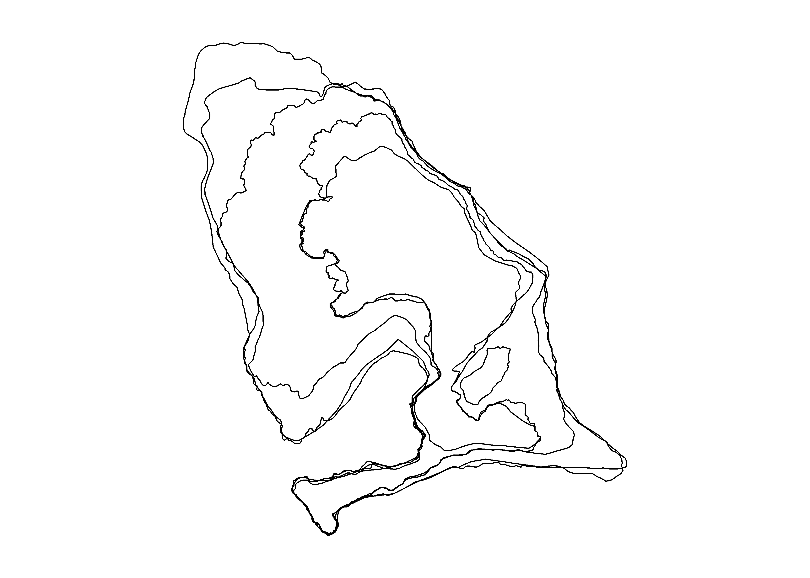
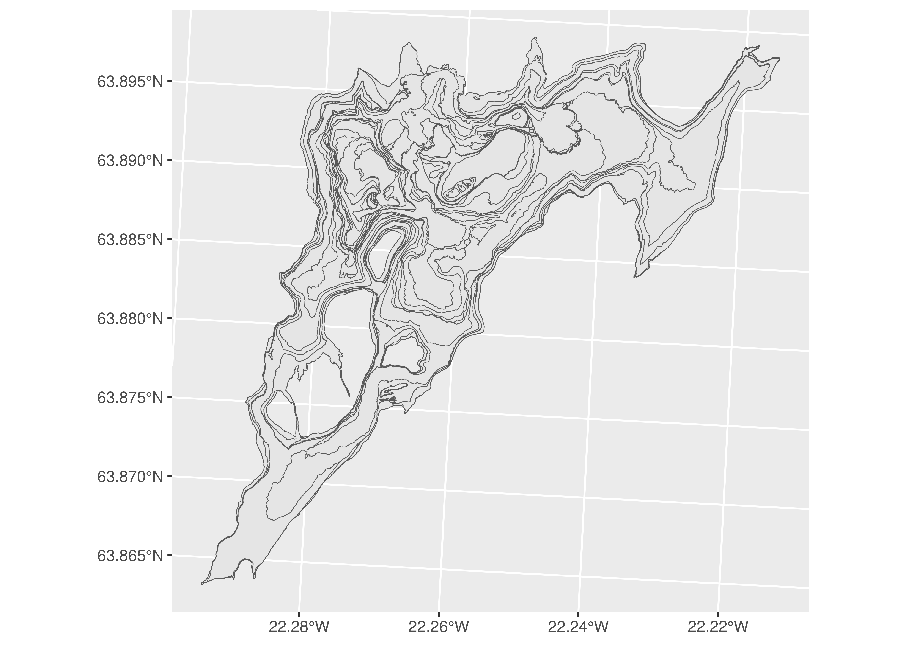
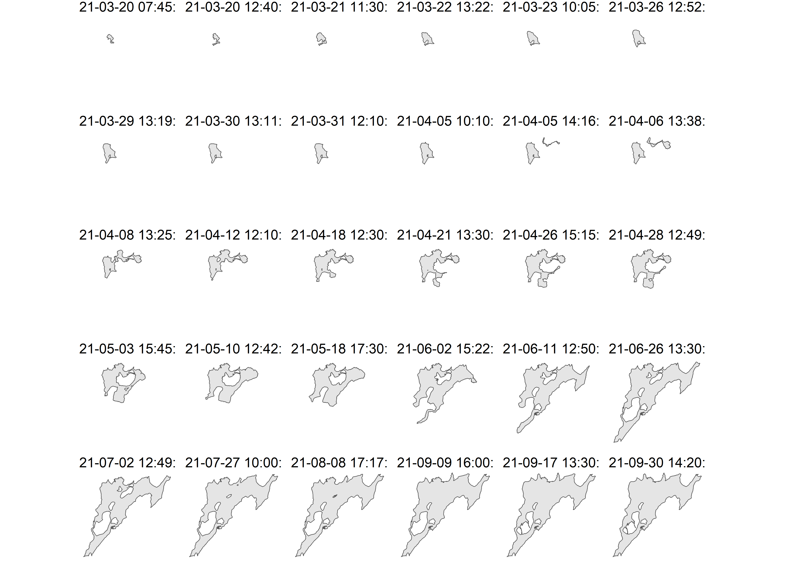
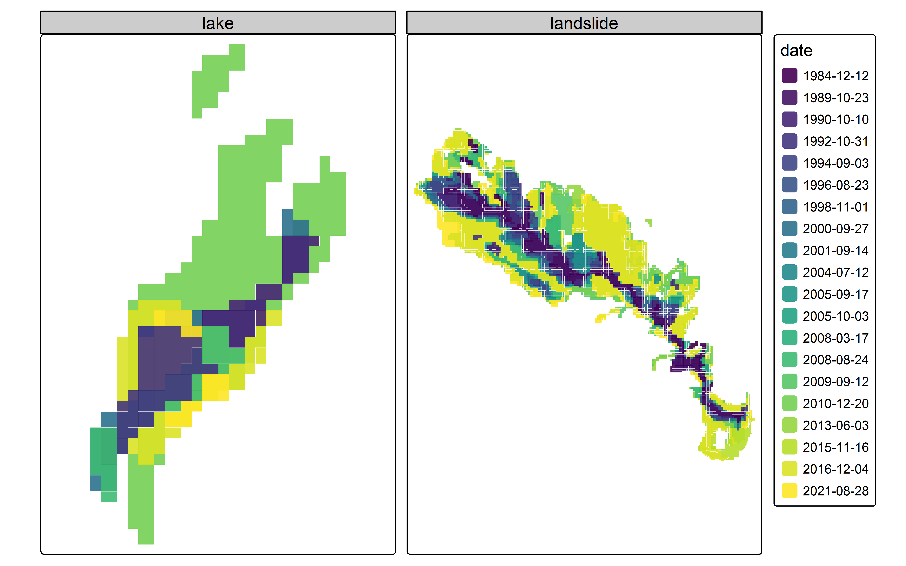
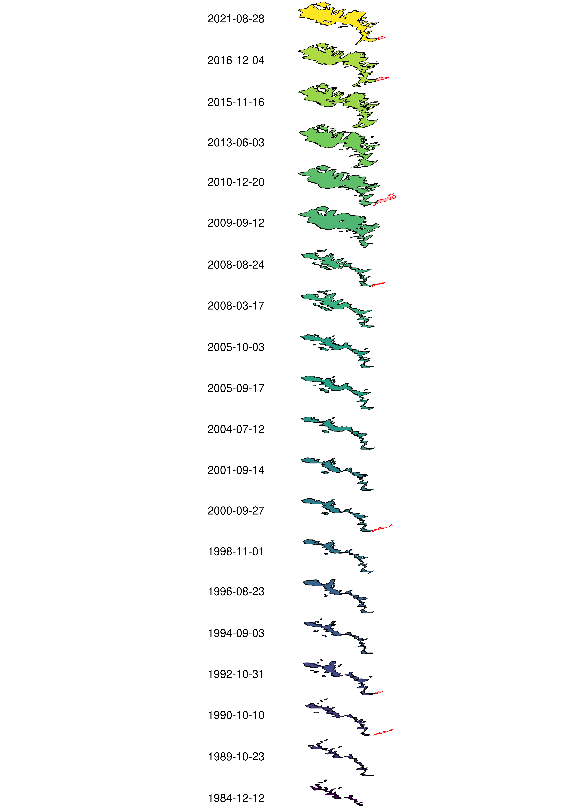
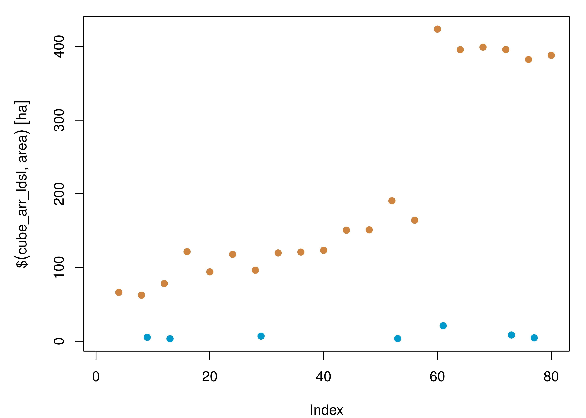
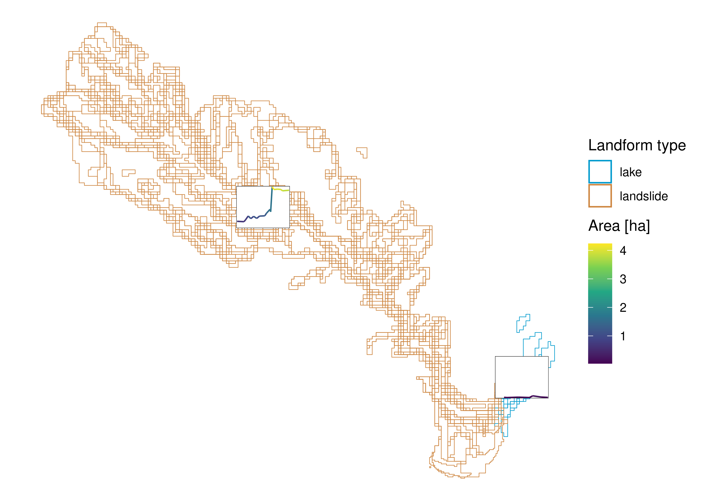

pkgs = c(
"dplyr","ggplot2","here","patchwork",
"purrr","readr","stringr",
"tidyr","tsibble","units","zen4R"
)
install.packages(pkgs)
remotes::install_github("huizezhang-sherry/cubble")
remotes::install_github("eliocamp/ggnewscale")
remotes::install_github("r-spatial/sf")
remotes::install_github("r-spatial/stars")
install.packages(
'tmap',
repos = c('https://r-tmap.r-universe.dev',
'https://cloud.r-project.org')
)Computational notebook
1 Context
This is a computational notebook to accompany the short paper manuscript “Vector data cubes for features evolving in space and time” submitted to AGILE 2024.
In this notebook, the expanded code on how to create vector data cubes (VDC) for shape-shifting features as described in section 3.2 (Vector data cube implementation) is included.
Note that the stand-alone code to recreate the figures of the manuscript can be browsed here (manuscript-figures.qmd).
These experiments are performed in R v. 4.3.2 and further details on library versions are included at the end of the notebook.
2 Libraries
The following chunk installs the needed libraries. Run only if overwriting current installations is not an issue. Note that cubble and ggnewscale come from the GitHub repository. tmap is installed from r-universe to work with version 4.
The libraries needed to reproduce this notebook are listed below.
library(cubble) # tabular VDCs
library(dplyr) # data wrangling
library(ggplot2) # visualisation
library(ggnewscale) # add second color/fill scale in ggplot
library(here) # manage current directory
library(patchwork) # plot composer
library(purrr) # functional programming
library(readr) # read CSV files
library(sf) # read vector files
library(stars) # array VDCs
library(stringr) # handle strings
library(tidyr) # create tidy data
library(tmap) # spatial visualisation
library(tsibble) # handle time series data
library(units) # set units
library(zen4R) # download data from zenodo3 Data and pre-processing
Both data sets are shared through Zenodo, therefore we will directly fetch the necessary data from this repository using zen4R.
3.1 Lava flows in Fagradalsfjall, Iceland
The lava flow outlines for the Fagradalsfjall eruption can be obtained from Pedersen et al. (2023).
3.1.1 Repository description
This is the description attached to the repository.
zenodo = get_zenodo(
doi = "10.5281/zenodo.7866738"
)
zenodo$metadata$descriptionThis repository contains the data behind the work described in Pedersen et al (in review), specifically the Digital Elevation Models (DEMs), orthoimages and lava outlines created as part of the near-real time monitoring of the Fagradalsfjall 2021 eruption (SW-Iceland).
The processing of the data is explained in detail in the Supplement S2 of Pedersen et al (2022).
The data derived from Pléiades surveys includes only the DEMs and the lava outlines. The Pléiades-based orthoimages are subject to license. Please contact the authors for further information about this.
Convention for file naming:
Data: DEM, Ortho, Outline
YYYYMMDD_HHMM: Date of acquisition
Platform used: Helicopter (HEL), Pléiades (PLE), Hasselblad A6D (A6D)
Origin of elevations in DEMs: meters above ellipsoid (zmae)
Ground Sampling Distance: 2x2m (DEM) and 30x30cm (Ortho)
Cartographic projection: isn93 (see cartographic specifications for further details)
Cartographic specifications:
Cartographic projection: ISN93/Lambert 1993 (EPSG: 3057, https://epsg.io/3057)
Horizontal and vertical reference frame: The surveys after 18 April 2021 are in ISN2016/ISH2004, updated locally around the study area in April 2021 (after pre-eruptive deformations occurred). The rest of the surveys of late March and early April were created using several floating reference systems (see Supplement S3 for details), since no ground surveys were available during the first weeks of the data collection. The surveys of 23 March 2021, 31 March 2021 were re-procesed in Gouhier et al., 2022, using the survey done on 18 May 2021 as reference.
Origin of elevations: Ellipsoid WGS84
Raster data format: GeoTIFF
Raster compression system: ZSTD (http://facebook.github.io/zstd/)
Vector data format: GeoPackage (https://www.geopackage.org/)
”
3.1.2 Files
As we see, the vector data format is GeoPackage. These are the files contained in the repository:
zenodo$files[[1]]
[[1]]$filename
[1] "orthoimages_pedersen_etal2022.zip"
[[1]]$filesize
[1] 6135463409
[[1]]$checksum
[1] "56b87142a69ac115d2fe4df961edbcad"
[[1]]$download
[1] "https://zenodo.org/api/records/7866738/files/orthoimages_pedersen_etal2022.zip/content"
[[2]]
[[2]]$filename
[1] "dems_pedersen_etal2022.zip"
[[2]]$filesize
[1] 378215030
[[2]]$checksum
[1] "82d51d5cedd1353958e24a13b097de50"
[[2]]$download
[1] "https://zenodo.org/api/records/7866738/files/dems_pedersen_etal2022.zip/content"
[[3]]
[[3]]$filename
[1] "outlines_pedersen_etal2022_v12.zip"
[[3]]$filesize
[1] 2447251
[[3]]$checksum
[1] "fc7a74d235274b9707bc5acb296b45ea"
[[3]]$download
[1] "https://zenodo.org/api/records/7866738/files/outlines_pedersen_etal2022_v12.zip/content"From an inspection on the Zenodo listing we could see that the outline for each date is saved as a different file.
3.1.3 Download and read
Hence, we will download only the outlines zipped file, unzip and create a list of the GeoPackage files to read into memory.
dir = tempdir()
download_zenodo(
doi = "10.5281/zenodo.7866738",
path = dir,
files = list(
"outlines_pedersen_etal2022_v12.zip"
),
overwrite = FALSE,
timeout = 600
)[zen4R][INFO] ZenodoRecord - Download in sequential mode
[zen4R][INFO] ZenodoRecord - Will download 1 file from record '7866738' (doi: '10.5281/zenodo.7866738') - total size: 2.3 MiB
[zen4R][INFO] Downloading file 'outlines_pedersen_etal2022_v12.zip' - size: 2.3 MiB
[zen4R][INFO] File downloaded at 'C:/Users/b1066081/AppData/Local/Temp/RtmpUX1mWZ'.
[zen4R][INFO] ZenodoRecord - Verifying file integrity...
[zen4R][INFO] File 'outlines_pedersen_etal2022_v12.zip': integrity verified (md5sum: fc7a74d235274b9707bc5acb296b45ea)
[zen4R][INFO] ZenodoRecord - End of download # Unzip
files = list.files(here(dir), full.names = TRUE)
lapply(files, unzip, exdir = here(dir, "unzipped"))Warning in FUN(X[[i]], ...): error 1 in extracting from zip file
Warning in FUN(X[[i]], ...): error 1 in extracting from zip file
Warning in FUN(X[[i]], ...): error 1 in extracting from zip file
Warning in FUN(X[[i]], ...): error 1 in extracting from zip file
Warning in FUN(X[[i]], ...): error 1 in extracting from zip file[[1]]
NULL
[[2]]
NULL
[[3]]
NULL
[[4]]
NULL
[[5]]
NULL
[[6]]
[1] "C:/Users/b1066081/AppData/Local/Temp/RtmpUX1mWZ/unzipped/outlines_pedersen_etal2022_v12/Outline_20210320_1240_A6D_Pedersen_etal2022_v12.gpkg"
[2] "C:/Users/b1066081/AppData/Local/Temp/RtmpUX1mWZ/unzipped/outlines_pedersen_etal2022_v12/Outline_20210321_1130_HEL_Pedersen_etal2022_v12.gpkg"
[3] "C:/Users/b1066081/AppData/Local/Temp/RtmpUX1mWZ/unzipped/outlines_pedersen_etal2022_v12/Outline_20210331_1210_A6D_Pedersen_etal2022_v12.gpkg"
[4] "C:/Users/b1066081/AppData/Local/Temp/RtmpUX1mWZ/unzipped/outlines_pedersen_etal2022_v12/Outline_20210405_1010_A6D_Pedersen_etal2022_v12.gpkg"
[5] "C:/Users/b1066081/AppData/Local/Temp/RtmpUX1mWZ/unzipped/outlines_pedersen_etal2022_v12/Outline_20210405_1416_A6D_Pedersen_etal2022_v12.gpkg"
[6] "C:/Users/b1066081/AppData/Local/Temp/RtmpUX1mWZ/unzipped/outlines_pedersen_etal2022_v12/Outline_20210406_1338_A6D_Pedersen_etal2022_v12.gpkg"
[7] "C:/Users/b1066081/AppData/Local/Temp/RtmpUX1mWZ/unzipped/outlines_pedersen_etal2022_v12/Outline_20210408_1325_A6D_Pedersen_etal2022_v12.gpkg"
[8] "C:/Users/b1066081/AppData/Local/Temp/RtmpUX1mWZ/unzipped/outlines_pedersen_etal2022_v12/Outline_20210412_1210_A6D_Pedersen_etal2022_v12.gpkg"
[9] "C:/Users/b1066081/AppData/Local/Temp/RtmpUX1mWZ/unzipped/outlines_pedersen_etal2022_v12/Outline_20210320_0745_HEL_Pedersen_etal2022_v12.gpkg"
[10] "C:/Users/b1066081/AppData/Local/Temp/RtmpUX1mWZ/unzipped/outlines_pedersen_etal2022_v12/Outline_20210322_1322_PLE_Pedersen_etal2022_v12.gpkg"
[11] "C:/Users/b1066081/AppData/Local/Temp/RtmpUX1mWZ/unzipped/outlines_pedersen_etal2022_v12/Outline_20210323_1005_A6D_Pedersen_etal2022_v12.gpkg"
[12] "C:/Users/b1066081/AppData/Local/Temp/RtmpUX1mWZ/unzipped/outlines_pedersen_etal2022_v12/Outline_20210326_1252_PLE_Pedersen_etal2022_v12.gpkg"
[13] "C:/Users/b1066081/AppData/Local/Temp/RtmpUX1mWZ/unzipped/outlines_pedersen_etal2022_v12/Outline_20210329_1319_PLE_Pedersen_etal2022_v12.gpkg"
[14] "C:/Users/b1066081/AppData/Local/Temp/RtmpUX1mWZ/unzipped/outlines_pedersen_etal2022_v12/Outline_20210330_1311_PLE_Pedersen_etal2022_v12.gpkg"
[15] "C:/Users/b1066081/AppData/Local/Temp/RtmpUX1mWZ/unzipped/outlines_pedersen_etal2022_v12/Outline_20210418_1230_A6D_Pedersen_etal2022_v12.gpkg"
[16] "C:/Users/b1066081/AppData/Local/Temp/RtmpUX1mWZ/unzipped/outlines_pedersen_etal2022_v12/Outline_20210421_1330_A6D_Pedersen_etal2022_v12.gpkg"
[17] "C:/Users/b1066081/AppData/Local/Temp/RtmpUX1mWZ/unzipped/outlines_pedersen_etal2022_v12/Outline_20210426_1515_A6D_Pedersen_etal2022_v12.gpkg"
[18] "C:/Users/b1066081/AppData/Local/Temp/RtmpUX1mWZ/unzipped/outlines_pedersen_etal2022_v12/Outline_20210428_1249_PLE_Pedersen_etal2022_v12.gpkg"
[19] "C:/Users/b1066081/AppData/Local/Temp/RtmpUX1mWZ/unzipped/outlines_pedersen_etal2022_v12/Outline_20210503_1545_A6D_Pedersen_etal2022_v12.gpkg"
[20] "C:/Users/b1066081/AppData/Local/Temp/RtmpUX1mWZ/unzipped/outlines_pedersen_etal2022_v12/Outline_20210510_1242_A6D_Pedersen_etal2022_v12.gpkg"
[21] "C:/Users/b1066081/AppData/Local/Temp/RtmpUX1mWZ/unzipped/outlines_pedersen_etal2022_v12/Outline_20210518_1730_A6D_Pedersen_etal2022_v12.gpkg"
[22] "C:/Users/b1066081/AppData/Local/Temp/RtmpUX1mWZ/unzipped/outlines_pedersen_etal2022_v12/Outline_20210602_1522_A6D_Pedersen_etal2022_v12.gpkg"
[23] "C:/Users/b1066081/AppData/Local/Temp/RtmpUX1mWZ/unzipped/outlines_pedersen_etal2022_v12/Outline_20210611_1250_A6D_Pedersen_etal2022_v12.gpkg"
[24] "C:/Users/b1066081/AppData/Local/Temp/RtmpUX1mWZ/unzipped/outlines_pedersen_etal2022_v12/Outline_20210626_1330_A6D_Pedersen_etal2022_v12.gpkg"
[25] "C:/Users/b1066081/AppData/Local/Temp/RtmpUX1mWZ/unzipped/outlines_pedersen_etal2022_v12/Outline_20210702_1249_PLE_Pedersen_etal2022_v12.gpkg"
[26] "C:/Users/b1066081/AppData/Local/Temp/RtmpUX1mWZ/unzipped/outlines_pedersen_etal2022_v12/Outline_20210727_1000_A6D_Pedersen_etal2022_v12.gpkg"
[27] "C:/Users/b1066081/AppData/Local/Temp/RtmpUX1mWZ/unzipped/outlines_pedersen_etal2022_v12/Outline_20210808_1717_A6D_Pedersen_etal2022_v12.gpkg"
[28] "C:/Users/b1066081/AppData/Local/Temp/RtmpUX1mWZ/unzipped/outlines_pedersen_etal2022_v12/Outline_20210909_1600_A6D_Pedersen_etal2022_v12.gpkg"
[29] "C:/Users/b1066081/AppData/Local/Temp/RtmpUX1mWZ/unzipped/outlines_pedersen_etal2022_v12/Outline_20210917_1330_A6D_Pedersen_etal2022_v12.gpkg"
[30] "C:/Users/b1066081/AppData/Local/Temp/RtmpUX1mWZ/unzipped/outlines_pedersen_etal2022_v12/Outline_20210930_1420_A6D_Pedersen_etal2022_v12.gpkg"# Find geopackage files
fn_gpkg = list.files(
here(dir, "unzipped"),
pattern = "Outline.*gpkg$",
full.names = TRUE,
recursive = TRUE
)With this we can read in the files into R as an sf object, where we combine all the files into one. The filename is kept to extract the date information from it.
# Create function to read in each file and to extract
# the date from the filename
read_fun = function(x){
read_sf(x) |>
mutate(
fn_gpkg = tail(str_split(x, '/')[[1]], n=1),
datetime = as.POSIXct(
paste(str_split(fn_gpkg, "_")[[1]][2:3], collapse = ""),
format = "%Y%m%d%H%M"
)
) |>
# One file does not have a crs set
st_set_crs(3057)
}
# Call map2 to read in the files
# and bind them into one single sf object
outlines_lf = map(fn_gpkg, read_fun) |> bind_rows()Warning: st_crs<- : replacing crs does not reproject data; use st_transform for
that3.1.4 Explore
We can look at the final object and have an initial idea of the contents.
outlines_lf |> glimpse()Rows: 33
Columns: 9
$ geom <GEOMETRY [m]> POLYGON ((339233.7 380352.7..., POLYGON ((339159.3 3…
$ fn_gpkg <chr> "Outline_20210320_0745_HEL_Pedersen_etal2022_v12.gpkg", "Outl…
$ datetime <dttm> 2021-03-20 07:45:00, 2021-03-20 12:40:00, 2021-03-21 11:30:0…
$ id <dbl> NA, NA, NA, NA, NA, NA, NA, NA, NA, NA, NA, NA, NA, NA, NA, N…
$ Area <dbl> NA, NA, 139224, NA, NA, NA, NA, NA, NA, NA, NA, NA, NA, NA, N…
$ layer <chr> NA, NA, NA, NA, NA, NA, NA, NA, NA, NA, "aoi_20210405_aft_sit…
$ path <chr> NA, NA, NA, NA, NA, NA, NA, NA, NA, NA, "/run/user/1000/gvfs/…
$ STD_ID1 <chr> NA, NA, NA, NA, NA, NA, NA, NA, NA, NA, NA, NA, NA, NA, NA, N…
$ BLN_Flag <dbl> NA, NA, NA, NA, NA, NA, NA, NA, NA, NA, NA, NA, NA, NA, NA, N…As seen, the columns accompanying the data are not complete and also do not provide extra information. We will mainly focus on the geometry and the datetime registered. We can take a short look at the polygons included in the data:
ggplot(outlines_lf) +
geom_sf(aes(color = datetime), fill = NA) 
3.1.5 Prepare for VDC
The final step is to make sure we have a single geometry per timestamp. For this, we group by datetime and summarise the geometries for each data with a union. We add a step to make the geometry valid in case the union operation caused any topological issues.
outlines_lf = outlines_lf |>
# Combine polygons from single date into multipolygons
group_by(datetime) |>
summarise(geom = st_combine(geom)) |>
ungroup() |>
# Make geometry valid
st_make_valid()Now our data is ready to be coerced to a VDC.
3.2 Landslide in Butangbunasi, Taiwan
The Butangbunasi landslide outlines can be obtained from Hölbling et al. (2024).
3.2.1 Repository description
This is the description attached to the repository.
zenodo = get_zenodo(
doi = "10.5281/zenodo.10635102"
)
zenodo$metadata$description
This repository contains an updated version of the data created and described by Hölbling et al. (2020), specifically the landslide and landslide-dammed lake outlines mapped using an object-based image analysis (OBIA) workflow, summary statistics and further information regarding the landslide and lake mapping, and a table with the typhoons and tropical storms selected for the study of the evolution of the Butangbunasi landslide in Taiwan from 1984 to 2018.
The update consists of the addition of a landslide and lake outline for the year 2021 following the tropical storm Lupit.
Further information on the methodology and data used are explained in Hölbling et al. (2020).
Landslide and landslide-dammed lake outlinesConvention for file naming:
Butangbunasi_YYYY or Butangbunasi_YYYY_MM_DD when several mappings per year were carried out.
YYYY corresponds to the year of the Landsat satellite imagery.
Cartographic specifications:
Cartographic projection: WGS 84 / UTM zone 51N (<a title="EPSG site" href="https://epsg.io/32651" target="_blank" rel="noopener">EPSG: 32651)
Vector data format: GeoPackage
OBIA statistics (Butangbunasi_OBIA_statistics.csv)Column descriptions:
| satellite_sensor | Satellite from which the outlines were generated |
| date | Acquisition date of the satellite imagery |
| landslide_area_ha | Total area in hectares of the landslide |
| lake_area_ha | Total area in hectares of the landslide-dammed lake |
| file | File name corresponding to the landslide and lake mapping summary |
Table derived from the International Best Track Archive for Climate Stewardship (IBTrACS) v.4 dataset.
Includes the location per storm closest to the Butangbunasi landslide study area.
These typhoons were identified as the ones causing a significant change in landslide area, based on visual inspection of pre- and post-event satellite imagery.
Typhoon dates were used as a marker to find and select satellite imagery for subsequent mapping.
Column descriptions:
| SID | Storm Identifier |
| NAME | Name provided by the agency. IBTrACS ignores most names that include digits or abbreviations |
| SEASON | Year |
| USA_SSHS |
Saffir-Simpson Hurricane Scale information based on the wind speed provided by the US agency wind speed (US agencies provide 1-minute wind speeds) -5 = Unknown [XX] -4 = Post-tropical [EX, ET, PT] -3 = Miscellaneous disturbances [WV, LO, DB, DS, IN, MD] -2 = Subtropical [SS, SD] Tropical systems classified based on wind speeds [TD, TS, HU, TY,, TC, ST, HR] -1 = Tropical depression (W<34) 0 = Tropical storm [34<W<64] 1 = Category 1 [64<=W<83] 2 = Category 2 [83<=W<96] 3 = Category 3 [96<=W<113] 4 = Category 4 [113<=W<137] 5 = Category 5 [W >= 137] |
| ISO_TIME | ISO Time provided in Universal Time Coordinates (UTC). Format is YYYY-MM-DD HH:mm:ss |
| DIST2LAND | Distance (km) to land from the current position. The land dataset includes all continents and any islands larger than 1400 km^2. The distance is the nearest at the present time in any direction |
| maxSSHS | The maximum SSHS category recorded during the storm trajectory |
| dist2aoi_km | Distance (km) to the Butangbunasi landslide site |
”
3.2.2 Files
Again, the vector data format is GeoPackage. These are the files contained in the repository:
zenodo$files[[1]]
[[1]]$filename
[1] "Butangbunasi_typhoons.csv"
[[1]]$filesize
[1] 1491
[[1]]$checksum
[1] "c6f80649e8e0dfaf1bb5834d38a4c262"
[[1]]$download
[1] "https://zenodo.org/api/records/10635102/files/Butangbunasi_typhoons.csv/content"
[[2]]
[[2]]$filename
[1] "outlines.zip"
[[2]]$filesize
[1] 146165
[[2]]$checksum
[1] "d0034de915b5cae20d9be02899550e9a"
[[2]]$download
[1] "https://zenodo.org/api/records/10635102/files/outlines.zip/content"
[[3]]
[[3]]$filename
[1] "Butangbunasi_OBIA_statistics.csv"
[[3]]$filesize
[1] 1276
[[3]]$checksum
[1] "8ebe12e999df3e41f862db5dc31a57e7"
[[3]]$download
[1] "https://zenodo.org/api/records/10635102/files/Butangbunasi_OBIA_statistics.csv/content"3.2.3 Download and read
From exploring the repository and checking the description, we concluded the “Butangbunasi_OBIA_statistics.csv” also contains valuable information that can be join into the outline data frames.
# Fetch also the CSV file with additional info
dir = tempdir()
download_zenodo(
doi = "10.5281/zenodo.10635102",
path = dir,
files = list(
"outlines.zip",
"Butangbunasi_OBIA_statistics.csv"
),
overwrite = FALSE,
timeout = 100
)[zen4R][INFO] ZenodoRecord - Download in sequential mode
[zen4R][INFO] ZenodoRecord - Will download 2 files from record '10635102' (doi: '10.5281/zenodo.10635102') - total size: 144 KiB
[zen4R][INFO] Downloading file 'outlines.zip' - size: 142.7 KiB
[zen4R][INFO] Downloading file 'Butangbunasi_OBIA_statistics.csv' - size: 1.2 KiB
[zen4R][INFO] Files downloaded at 'C:/Users/b1066081/AppData/Local/Temp/RtmpUX1mWZ'.
[zen4R][INFO] ZenodoRecord - Verifying file integrity...
[zen4R][INFO] File 'outlines.zip': integrity verified (md5sum: d0034de915b5cae20d9be02899550e9a)
[zen4R][INFO] File 'Butangbunasi_OBIA_statistics.csv': integrity verified (md5sum: 8ebe12e999df3e41f862db5dc31a57e7)
[zen4R][INFO] ZenodoRecord - End of download # Unzip
files = list.files(here(dir), full.names = TRUE)
lapply(files, unzip, exdir = here(dir, "unzipped"))Warning in FUN(X[[i]], ...): error 1 in extracting from zip file
Warning in FUN(X[[i]], ...): error 1 in extracting from zip file
Warning in FUN(X[[i]], ...): error 1 in extracting from zip file
Warning in FUN(X[[i]], ...): error 1 in extracting from zip file
Warning in FUN(X[[i]], ...): error 1 in extracting from zip file
Warning in FUN(X[[i]], ...): error 1 in extracting from zip file
Warning in FUN(X[[i]], ...): error 1 in extracting from zip file
Warning in FUN(X[[i]], ...): error 1 in extracting from zip file
Warning in FUN(X[[i]], ...): error 1 in extracting from zip file
Warning in FUN(X[[i]], ...): error 1 in extracting from zip file
Warning in FUN(X[[i]], ...): error 1 in extracting from zip file
Warning in FUN(X[[i]], ...): error 1 in extracting from zip file
Warning in FUN(X[[i]], ...): error 1 in extracting from zip file
Warning in FUN(X[[i]], ...): error 1 in extracting from zip file
Warning in FUN(X[[i]], ...): error 1 in extracting from zip file[[1]]
NULL
[[2]]
NULL
[[3]]
NULL
[[4]]
NULL
[[5]]
NULL
[[6]]
NULL
[[7]]
NULL
[[8]]
NULL
[[9]]
NULL
[[10]]
NULL
[[11]]
NULL
[[12]]
NULL
[[13]]
NULL
[[14]]
NULL
[[15]]
[1] "C:/Users/b1066081/AppData/Local/Temp/RtmpUX1mWZ/unzipped/outlines/Butangbunasi_1984.gpkg"
[2] "C:/Users/b1066081/AppData/Local/Temp/RtmpUX1mWZ/unzipped/outlines/Butangbunasi_1989.gpkg"
[3] "C:/Users/b1066081/AppData/Local/Temp/RtmpUX1mWZ/unzipped/outlines/Butangbunasi_1990.gpkg"
[4] "C:/Users/b1066081/AppData/Local/Temp/RtmpUX1mWZ/unzipped/outlines/Butangbunasi_1992.gpkg"
[5] "C:/Users/b1066081/AppData/Local/Temp/RtmpUX1mWZ/unzipped/outlines/Butangbunasi_1994.gpkg"
[6] "C:/Users/b1066081/AppData/Local/Temp/RtmpUX1mWZ/unzipped/outlines/Butangbunasi_1996.gpkg"
[7] "C:/Users/b1066081/AppData/Local/Temp/RtmpUX1mWZ/unzipped/outlines/Butangbunasi_1998.gpkg"
[8] "C:/Users/b1066081/AppData/Local/Temp/RtmpUX1mWZ/unzipped/outlines/Butangbunasi_2000.gpkg"
[9] "C:/Users/b1066081/AppData/Local/Temp/RtmpUX1mWZ/unzipped/outlines/Butangbunasi_2001.gpkg"
[10] "C:/Users/b1066081/AppData/Local/Temp/RtmpUX1mWZ/unzipped/outlines/Butangbunasi_2004.gpkg"
[11] "C:/Users/b1066081/AppData/Local/Temp/RtmpUX1mWZ/unzipped/outlines/Butangbunasi_2005.gpkg"
[12] "C:/Users/b1066081/AppData/Local/Temp/RtmpUX1mWZ/unzipped/outlines/Butangbunasi_2005_10_03.gpkg"
[13] "C:/Users/b1066081/AppData/Local/Temp/RtmpUX1mWZ/unzipped/outlines/Butangbunasi_2008.gpkg"
[14] "C:/Users/b1066081/AppData/Local/Temp/RtmpUX1mWZ/unzipped/outlines/Butangbunasi_2008_03_17.gpkg"
[15] "C:/Users/b1066081/AppData/Local/Temp/RtmpUX1mWZ/unzipped/outlines/Butangbunasi_2009.gpkg"
[16] "C:/Users/b1066081/AppData/Local/Temp/RtmpUX1mWZ/unzipped/outlines/Butangbunasi_2010.gpkg"
[17] "C:/Users/b1066081/AppData/Local/Temp/RtmpUX1mWZ/unzipped/outlines/Butangbunasi_2013.gpkg"
[18] "C:/Users/b1066081/AppData/Local/Temp/RtmpUX1mWZ/unzipped/outlines/Butangbunasi_2015.gpkg"
[19] "C:/Users/b1066081/AppData/Local/Temp/RtmpUX1mWZ/unzipped/outlines/Butangbunasi_2016.gpkg"
[20] "C:/Users/b1066081/AppData/Local/Temp/RtmpUX1mWZ/unzipped/outlines/Butangbunasi_2018.gpkg"
[21] "C:/Users/b1066081/AppData/Local/Temp/RtmpUX1mWZ/unzipped/outlines/Butangbunasi_2021.gpkg"
[[16]]
[1] "C:/Users/b1066081/AppData/Local/Temp/RtmpUX1mWZ/unzipped/outlines_pedersen_etal2022_v12/Outline_20210320_1240_A6D_Pedersen_etal2022_v12.gpkg"
[2] "C:/Users/b1066081/AppData/Local/Temp/RtmpUX1mWZ/unzipped/outlines_pedersen_etal2022_v12/Outline_20210321_1130_HEL_Pedersen_etal2022_v12.gpkg"
[3] "C:/Users/b1066081/AppData/Local/Temp/RtmpUX1mWZ/unzipped/outlines_pedersen_etal2022_v12/Outline_20210331_1210_A6D_Pedersen_etal2022_v12.gpkg"
[4] "C:/Users/b1066081/AppData/Local/Temp/RtmpUX1mWZ/unzipped/outlines_pedersen_etal2022_v12/Outline_20210405_1010_A6D_Pedersen_etal2022_v12.gpkg"
[5] "C:/Users/b1066081/AppData/Local/Temp/RtmpUX1mWZ/unzipped/outlines_pedersen_etal2022_v12/Outline_20210405_1416_A6D_Pedersen_etal2022_v12.gpkg"
[6] "C:/Users/b1066081/AppData/Local/Temp/RtmpUX1mWZ/unzipped/outlines_pedersen_etal2022_v12/Outline_20210406_1338_A6D_Pedersen_etal2022_v12.gpkg"
[7] "C:/Users/b1066081/AppData/Local/Temp/RtmpUX1mWZ/unzipped/outlines_pedersen_etal2022_v12/Outline_20210408_1325_A6D_Pedersen_etal2022_v12.gpkg"
[8] "C:/Users/b1066081/AppData/Local/Temp/RtmpUX1mWZ/unzipped/outlines_pedersen_etal2022_v12/Outline_20210412_1210_A6D_Pedersen_etal2022_v12.gpkg"
[9] "C:/Users/b1066081/AppData/Local/Temp/RtmpUX1mWZ/unzipped/outlines_pedersen_etal2022_v12/Outline_20210320_0745_HEL_Pedersen_etal2022_v12.gpkg"
[10] "C:/Users/b1066081/AppData/Local/Temp/RtmpUX1mWZ/unzipped/outlines_pedersen_etal2022_v12/Outline_20210322_1322_PLE_Pedersen_etal2022_v12.gpkg"
[11] "C:/Users/b1066081/AppData/Local/Temp/RtmpUX1mWZ/unzipped/outlines_pedersen_etal2022_v12/Outline_20210323_1005_A6D_Pedersen_etal2022_v12.gpkg"
[12] "C:/Users/b1066081/AppData/Local/Temp/RtmpUX1mWZ/unzipped/outlines_pedersen_etal2022_v12/Outline_20210326_1252_PLE_Pedersen_etal2022_v12.gpkg"
[13] "C:/Users/b1066081/AppData/Local/Temp/RtmpUX1mWZ/unzipped/outlines_pedersen_etal2022_v12/Outline_20210329_1319_PLE_Pedersen_etal2022_v12.gpkg"
[14] "C:/Users/b1066081/AppData/Local/Temp/RtmpUX1mWZ/unzipped/outlines_pedersen_etal2022_v12/Outline_20210330_1311_PLE_Pedersen_etal2022_v12.gpkg"
[15] "C:/Users/b1066081/AppData/Local/Temp/RtmpUX1mWZ/unzipped/outlines_pedersen_etal2022_v12/Outline_20210418_1230_A6D_Pedersen_etal2022_v12.gpkg"
[16] "C:/Users/b1066081/AppData/Local/Temp/RtmpUX1mWZ/unzipped/outlines_pedersen_etal2022_v12/Outline_20210421_1330_A6D_Pedersen_etal2022_v12.gpkg"
[17] "C:/Users/b1066081/AppData/Local/Temp/RtmpUX1mWZ/unzipped/outlines_pedersen_etal2022_v12/Outline_20210426_1515_A6D_Pedersen_etal2022_v12.gpkg"
[18] "C:/Users/b1066081/AppData/Local/Temp/RtmpUX1mWZ/unzipped/outlines_pedersen_etal2022_v12/Outline_20210428_1249_PLE_Pedersen_etal2022_v12.gpkg"
[19] "C:/Users/b1066081/AppData/Local/Temp/RtmpUX1mWZ/unzipped/outlines_pedersen_etal2022_v12/Outline_20210503_1545_A6D_Pedersen_etal2022_v12.gpkg"
[20] "C:/Users/b1066081/AppData/Local/Temp/RtmpUX1mWZ/unzipped/outlines_pedersen_etal2022_v12/Outline_20210510_1242_A6D_Pedersen_etal2022_v12.gpkg"
[21] "C:/Users/b1066081/AppData/Local/Temp/RtmpUX1mWZ/unzipped/outlines_pedersen_etal2022_v12/Outline_20210518_1730_A6D_Pedersen_etal2022_v12.gpkg"
[22] "C:/Users/b1066081/AppData/Local/Temp/RtmpUX1mWZ/unzipped/outlines_pedersen_etal2022_v12/Outline_20210602_1522_A6D_Pedersen_etal2022_v12.gpkg"
[23] "C:/Users/b1066081/AppData/Local/Temp/RtmpUX1mWZ/unzipped/outlines_pedersen_etal2022_v12/Outline_20210611_1250_A6D_Pedersen_etal2022_v12.gpkg"
[24] "C:/Users/b1066081/AppData/Local/Temp/RtmpUX1mWZ/unzipped/outlines_pedersen_etal2022_v12/Outline_20210626_1330_A6D_Pedersen_etal2022_v12.gpkg"
[25] "C:/Users/b1066081/AppData/Local/Temp/RtmpUX1mWZ/unzipped/outlines_pedersen_etal2022_v12/Outline_20210702_1249_PLE_Pedersen_etal2022_v12.gpkg"
[26] "C:/Users/b1066081/AppData/Local/Temp/RtmpUX1mWZ/unzipped/outlines_pedersen_etal2022_v12/Outline_20210727_1000_A6D_Pedersen_etal2022_v12.gpkg"
[27] "C:/Users/b1066081/AppData/Local/Temp/RtmpUX1mWZ/unzipped/outlines_pedersen_etal2022_v12/Outline_20210808_1717_A6D_Pedersen_etal2022_v12.gpkg"
[28] "C:/Users/b1066081/AppData/Local/Temp/RtmpUX1mWZ/unzipped/outlines_pedersen_etal2022_v12/Outline_20210909_1600_A6D_Pedersen_etal2022_v12.gpkg"
[29] "C:/Users/b1066081/AppData/Local/Temp/RtmpUX1mWZ/unzipped/outlines_pedersen_etal2022_v12/Outline_20210917_1330_A6D_Pedersen_etal2022_v12.gpkg"
[30] "C:/Users/b1066081/AppData/Local/Temp/RtmpUX1mWZ/unzipped/outlines_pedersen_etal2022_v12/Outline_20210930_1420_A6D_Pedersen_etal2022_v12.gpkg"
[[17]]
NULL# Find geopackage files
mapping_ls = list.files(
here(dir, "unzipped", "outlines"),
pattern = ".gpkg",
full.names = TRUE
)We can then read in the CSV file and the outline files. With a left join, we can obtain the date and other columns from the CSV file.
# Read in CSV file
stats = read_csv(
here(dir, "Butangbunasi_OBIA_statistics.csv")
)
# Set-up a read function that fetches filename
read_fun = function(x){
read_sf(x) |>
mutate(
fn_gpkg = tail(str_split(x, '/')[[1]], n=1),
)
}
# Read files and combine into single sf object
# Join with CSV file
outlines_ldsl = lapply(mapping_ls, read_fun) |>
bind_rows() |>
left_join(stats, by = c("fn_gpkg" = "file"))3.2.4 Explore
We can look at the final object and have an initial idea of the contents.
outlines_ldsl |> glimpse()Rows: 124
Columns: 8
$ Area_ha <dbl> 0.546875, 1.000000, 10.656250, 3.687500, 18.312500, …
$ Class <chr> "landslide", "landslide", "landslide", "landslide", …
$ geom <POLYGON [m]> POLYGON ((270075 2569820, 2..., POLYGON ((27…
$ fn_gpkg <chr> "Butangbunasi_1984.gpkg", "Butangbunasi_1984.gpkg", …
$ satellite_sensor <chr> "Landsat 5", "Landsat 5", "Landsat 5", "Landsat 5", …
$ date <date> 1984-12-12, 1984-12-12, 1984-12-12, 1984-12-12, 198…
$ landslide_area_ha <dbl> 66.2500, 66.2500, 66.2500, 66.2500, 66.2500, 66.2500…
$ lake_area_ha <dbl> NA, NA, NA, NA, NA, NA, NA, NA, NA, NA, NA, NA, NA, …For this case, the CSV file added some extra information to the data, such as the satellite sensor and the landslide area. We see also the column class and lake area which suggests there is more than one class for this dataset. Let’s look at the polygons included in the data:
ggplot(arrange(outlines_ldsl, desc(date))) +
geom_sf(aes(color = date, fill = Class), alpha = 0.2) +
scale_color_viridis_c(trans = "date") +
scale_fill_manual(values = c("deepskyblue3", "peru"))
We see here that the data does not only contain the landslide outlines but also the delineation of a dammed lake.
3.2.5 Prepare for VDC
outlines_ldsl = outlines_ldsl |>
# Coerce date column to Date class
mutate(date = as.Date(date)) |>
# Remove outline for 2018
# this is a reference outline and does not follow a
# Typhoon event according to Hoelbling et al., 2020
filter(date != as.Date("2018-11-08")) |>
# Group by date which in combination with summarise
# will union all single polygons into a multipolygon
group_by(date, Class) |>
# Summarise sensor and area information for landslide
summarise(
sensor = first(satellite_sensor),
area_ldsl = set_units(first(landslide_area_ha), 'ha'),
area_lake = set_units(first(lake_area_ha), 'ha')
) |>
ungroup() |>
# collapse the area column into a single one depending on Class
mutate(
area = case_when(
Class == "landslide" ~ area_ldsl,
Class == "lake" ~ area_lake
)
) |>
select(-starts_with("area_")) |>
# Complete data for missing cases of date-Class combination
complete(date, Class) |>
# rename the class column (lowercase)
rename(class = Class) |>
# convert back to sf
st_as_sf()`summarise()` has grouped output by 'date'. You can override using the
`.groups` argument.4 VDC creation
4.1 Array format
We will start creating an array VDC for the shape-evolving features. For this, we create an array object containing the data, i.e., the measure, that in this case are the changing geometries, and the dimensions of the array that correspond to the length of unique summary geometries (in this case 1), and of unique datetime strings.
Finally, we create a dimensions object that includes the summary geometry for our shape-evolving features. This can be the union of all the changing geometries or the centroid of those or the point from which the lava erupts or the landslide scar, or any other point the analyst sees adequate.
4.1.1 Lava flow VDC
For the lava flow, we do not use a unique identifier (id) because this is the only feature of this class under analysis. That means we are not including a second lava flow, e.g. the one in Grindavík, in the same cube, although we could when data is available.
# Create array
a = array(
data = outlines_lf$geom,
dim = c(
1,
length(unique(outlines_lf$datetime))
),
dimnames = list(
geom_sum = 1,
datetime = unique(outlines_lf$datetime)
)
)
# Create dimensions object
# Summary geometry is the centroid of the union of all geometries
# The point parameter indicates if the value refers to a point (location)
# or to a pixel (area) value
dim_cent = st_dimensions(
geom_sum = st_centroid(st_make_valid(st_union(outlines_lf$geom))),
datetime = unique(outlines_lf$datetime),
point = c(TRUE, FALSE)
)
# Coerce to cube
(cube_arr_lf = st_as_stars(
list(geometry = a),
dimensions = dim_cent)
)stars object with 2 dimensions and 1 attribute
attribute(s):
geometry
MULTIPOLYGON : 2
POLYGON :28
epsg:3057 : 0
+proj=lcc ...: 0
dimension(s):
from to refsys point
geom_sum 1 1 ISN93 / Lambert 1993 TRUE
datetime 1 30 POSIXct FALSE
values
geom_sum POINT (339860 380008)
datetime 2021-03-20 07:45:00,...,2021-09-30 14:20:00If we would use the union we will see under the values column of the geom_sum dimension not a POINT geometry as above but a POLYGON geometry. We illustrate this with an unsaved object, so we will keep working with the centroid as the geom_sum.
dim_union = st_dimensions(
geom_sum = st_make_valid(st_union(outlines_lf$geom)),
datetime = unique(outlines_lf$datetime),
point = c(TRUE, FALSE)
)
# Coerce to cube
st_as_stars(
list(geometry = a),
dimensions = dim_union)stars object with 2 dimensions and 1 attribute
attribute(s):
geometry
MULTIPOLYGON : 2
POLYGON :28
epsg:3057 : 0
+proj=lcc ...: 0
dimension(s):
from to refsys point
geom_sum 1 1 ISN93 / Lambert 1993 FALSE
datetime 1 30 POSIXct FALSE
values
geom_sum POLYGON ((339772 381144, 33...
datetime 2021-03-20 07:45:00,...,2021-09-30 14:20:004.1.2 Landslide VDC
For the landslide example we have added also the landslide-dammed lake outlines. The lake has been present in seven of the Landsat scenes mapped and therefore can serve as an example on how to handle absence in the data, as well as a second feature set in a VDC.
In this example, we add class as an extra dimension, which will mark whether the shape-evolving geometry is a landslide or a lake. For this particular case this dimension becomes redundant since there are two classes and two summary geometries, however, when we deal with more landslides and associated lakes, this could become useful. We will notice data redundancy by checking the amount of geometries in the summary of the attributes, we had initially 40 geometries and now we have 80, with 53 empty geometries.
We will perform some extra data wrangling to create this cube. Namely, we compute the summary geometry on the original sf object and perform again a complete case check to fill values with NAs for every combination of date, class and geom_sum.
Further, this dataset contains other information that can be mapped to the attributes such as the sensor and area. We will construct separate arrays for these and add them all to the cube.
# Add geom_sum columns to original sf data
# will be used also to create tabular VDC
outlines_ldsl_m = outlines_ldsl |>
# Summary geometry is the centroid of the union
# of all geometries per type
group_by(class) |>
mutate(
geom_sum = st_centroid(st_make_valid(st_union(geom)))
) |>
relocate(geom_sum, .after = everything()) |>
ungroup() |>
st_as_sf(sf_column_name = 'geom_sum')
# Complete cases, saved as separate object, see tabular format
outlines_ldsl_c = outlines_ldsl_m |>
complete(date, class, geom_sum) |>
st_as_sf(sf_column_name = 'geom_sum')
# Create arrays
dims = c(
length(unique(outlines_ldsl_c$geom_sum)),
length(unique(outlines_ldsl_c$class)),
length(unique(outlines_ldsl_c$date))
)
dnms = list(
geom_sum = unique(outlines_ldsl_c$geom_sum),
class = unique(outlines_ldsl_c$class),
datetime = unique(outlines_ldsl_c$date)
)
geom = array(
data = outlines_ldsl_c$geom,
dim = dims,
dimnames = dnms
)
area = array(
data = outlines_ldsl_c$area,
dim = dims,
dimnames = dnms
)
sensor = array(
data = outlines_ldsl_c$sensor,
dim = dims,
dimnames = dnms
)
# Summarise geometries to add in dimensions object
sumgeom = outlines_ldsl_c |>
group_by(class) |>
summarise(geom_sum = first(geom_sum))
# Create dimensions object
# The point parameter indicates if the value refers to a point (location)
# or to a pixel (area) value
dim_cent = st_dimensions(
geom_sum = sumgeom$geom_sum,
class = unique(outlines_ldsl_c$class),
date = unique(outlines_ldsl_c$date)
# point = c(TRUE, TRUE, FALSE)
)
# Coerce to cube
(cube_arr_ldsl = st_as_stars(
list(geometry = geom, area = set_units(area, "ha"), sensor = sensor),
dimensions = dim_cent)
)stars object with 3 dimensions and 3 attributes
attribute(s):
geometry area [ha] sensor
GEOMETRYCOLLECTION:53 Min. : 3.328 Length:80
MULTIPOLYGON :23 1st Qu.: 41.703 Class :character
POLYGON : 4 Median :119.750 Mode :character
epsg:32651 : 0 Mean :151.641
+proj=utm ... : 0 3rd Qu.:177.383
Max. :423.562
NA's :53
dimension(s):
from to refsys point
geom_sum 1 2 WGS 84 / UTM zone 51N TRUE
class 1 2 NA FALSE
date 1 20 Date FALSE
values
geom_sum POINT (274148 2567228), POINT (274148 2567228)
class lake , landslide
date 1984-12-12,...,2021-08-284.2 Tabular format
For the tabular format we use cubble. We can either coerce the stars VDC into a cubble (as shown for the lava flow example), or we can create a cubble from the original sf object (as shown for the landslide example).
For this format, we need to define a key and index. The key is the identifier of the spatial face of the cube while the index is the identifier of the temporal face. We then use index = time and we should use key = geom_sum. This works when creating the cubble object but the algorithm to display the temporal face gets stuck as it tries to add a WKT geometry to every entry. There is one “hack” to handle this when coercing from a stars object. Internally, cubble adds an id column to the data, so we can call key = id and the cube creation in its spatial and temporal forms will work. This is the approach we use for the lava flow VDC. For the landslide VDC we added the column class as the key, which becomes then the identifier. Better ways to handle this will be suggested to cubble in future work.
4.2.1 Lava flow VDC
As mentioned above, this VDC is created from the stars VDC.
cube_tab_lf = as_cubble(
cube_arr_lf, key = id, index = datetime
)We can see the temporal and spatial faces of the cube. As we will see ts in the spatial table is a list column where the time series is stored as displayed in the temporal table.
cube_tab_lf |>
face_spatial()ℹ The cubble is already in the nested form# cubble: key: id [1], index: datetime, nested form, [sf]
# spatial: [339859.695427319, 380008.4903805, 339859.695427319,
# 380008.4903805], ISN93 / Lambert 1993
# temporal: datetime [dttm], geometry [GEOMETRY [m]]
id x y geom_sum ts
* <int> <dbl> <dbl> <POINT [m]> <list>
1 1 339860. 380008. (339859.7 380008.5) <tibble [30 × 2]>cube_tab_lf |>
face_temporal()# cubble: key: id [1], index: datetime, long form
# temporal: 2021-03-20 07:45:00 -- 2021-09-30 14:20:00 [1m], has gaps!
# spatial: x [dbl], y [dbl], geom_sum [POINT [m]]
id datetime geometry
<int> <dttm> <POLYGON [m]>
1 1 2021-03-20 07:45:00 ((339233.7 380352.7, 339227.5 380350.7, 339222.2 3…
2 1 2021-03-20 12:40:00 ((339159.3 380472.3, 339159.3 380472.3, 339159.1 3…
3 1 2021-03-21 11:30:00 ((339355.4 380527.9, 339368.6 380521.4, 339369 380…
4 1 2021-03-22 13:22:00 ((339207.9 380067.1, 339203.2 380057.7, 339199.6 3…
5 1 2021-03-23 10:05:00 ((339066.8 380389.2, 339066.1 380390.5, 339062.6 3…
6 1 2021-03-26 12:52:00 ((339502.9 380141.2, 339495 380144.6, 339493 38014…
7 1 2021-03-29 13:19:00 ((339566.1 380135, 339558.8 380133.6, 339558.6 380…
8 1 2021-03-30 13:11:00 ((339506.3 380309.3, 339505 380302.6, 339504.8 380…
9 1 2021-03-31 12:10:00 ((339031.2 380289.6, 339032 380291, 339032.2 38029…
10 1 2021-04-05 10:10:00 ((339360.7 380154.9, 339360.2 380154.7, 339357.4 3…
# ℹ 20 more rowsWhat is interesting from this tabular format is that the tsibble package is used under the hood to handle the temporal aspect. Therefore, information on time intervals is inferred from the given timestamps and it is therefore determined if the time series has any gaps.
4.2.2 Landslide VDC
For this VDC we will use the modified sf object for the landslide dataset. We have included here the version without the complete cases for the three dimensions because cubble throws an error for this (there is a duplication of indices). Further investigation into why this is the case will follow for future work.
## Create cubble
cube_tab_ldsl = as_cubble(
outlines_ldsl_m, key = class, index = date
)The cubble creation is now based on the object with complete cases for every combination of date and class. This means NA values and empty geometries are included. However, we could also build the cubble without this NA values, and hence avoid data redundancy (note the dimensions of the tibble in the list-column ts.
as_cubble(
drop_na(outlines_ldsl_m), key = class, index = date
)# cubble: key: class [2], index: date, nested form, [sf]
# spatial: [271664.917737363, 2567227.57526178, 274148.347513089,
# 2568861.92906261], WGS 84 / UTM zone 51N
# temporal: date [date], sensor [chr], area [[ha]], geom [MULTIPOLYGON [m]]
class x y geom_sum ts
* <chr> <dbl> <dbl> <POINT [m]> <list>
1 landslide 271665. 2568862. (271664.9 2568862) <tibble [20 × 4]>
2 lake 274148. 2567228. (274148.3 2567228) <tibble [7 × 4]> For compatibility with the array format, we will keep the first approach as the tabular VDC. We can see the temporal and spatial faces of the cube. Here we note how the “lake” and “landslide” become the identifiers for the feature sets.
cube_tab_ldsl |>
face_spatial()ℹ The cubble is already in the nested form# cubble: key: class [2], index: date, nested form, [sf]
# spatial: [271664.917737363, 2567227.57526178, 274148.347513089,
# 2568861.92906261], WGS 84 / UTM zone 51N
# temporal: date [date], sensor [chr], area [[ha]], geom [GEOMETRY [m]]
class x y geom_sum ts
* <chr> <dbl> <dbl> <POINT [m]> <list>
1 lake 274148. 2567228. (274148.3 2567228) <tibble [20 × 4]>
2 landslide 271665. 2568862. (271664.9 2568862) <tibble [20 × 4]>cube_tab_ldsl |>
face_temporal()# cubble: key: class [2], index: date, long form
# temporal: 1984-12-12 -- 2021-08-28 [8D], has gaps!
# spatial: x [dbl], y [dbl], geom_sum [POINT [m]]
class date sensor area geom
<chr> <date> <chr> [ha] <GEOMETRY [m]>
1 lake 1984-12-12 <NA> NA GEOMETRYCOLLECTION EMPTY
2 lake 1989-10-23 <NA> NA GEOMETRYCOLLECTION EMPTY
3 lake 1990-10-10 Landsat 5 5.31 MULTIPOLYGON (((273887.5 2566870, 273887.5 …
4 lake 1992-10-31 Landsat 5 3.33 POLYGON ((273950 2566870, 273925 2566870, 2…
5 lake 1994-09-03 <NA> NA GEOMETRYCOLLECTION EMPTY
6 lake 1996-08-23 <NA> NA GEOMETRYCOLLECTION EMPTY
7 lake 1998-11-01 <NA> NA GEOMETRYCOLLECTION EMPTY
8 lake 2000-09-27 Landsat 7 6.88 MULTIPOLYGON (((273925 2566783, 273862.5 25…
9 lake 2001-09-14 <NA> NA GEOMETRYCOLLECTION EMPTY
10 lake 2004-07-12 <NA> NA GEOMETRYCOLLECTION EMPTY
# ℹ 30 more rows5 Showcase
In this section, we will demonstrate some of the operations that are supported now for VDCs, and some of the operations that we would like to implement in future work.
We will use the created cubes (lava flow, landslide) interchangeably, considering that most of the operations (given the data structure, e.g., extra dimensions, extra attributes) can be applied to both examples.
5.1 Cube operations
Most of dplyr verbs and sf functions work for the array and tabular cubes. For the tabular cubes, it is important to remember which face we want to apply the operation to.
5.1.1 Geometric measurements
cube_arr_lf |>
mutate(area = st_area(geometry))stars object with 2 dimensions and 2 attributes
attribute(s):
geometry area [m^2]
MULTIPOLYGON : 2 Min. : 54517
POLYGON :28 1st Qu.: 287810
epsg:3057 : 0 Median : 963505
+proj=lcc ...: 0 Mean :1677119
3rd Qu.:3084240
Max. :4848672
dimension(s):
from to refsys point
geom_sum 1 1 ISN93 / Lambert 1993 TRUE
datetime 1 30 POSIXct FALSE
values
geom_sum POINT (339860 380008)
datetime 2021-03-20 07:45:00,...,2021-09-30 14:20:00cube_tab_lf |>
face_temporal() |>
mutate(area = st_area(geometry))# cubble: key: id [1], index: datetime, long form
# temporal: 2021-03-20 07:45:00 -- 2021-09-30 14:20:00 [1m], has gaps!
# spatial: x [dbl], y [dbl], geom_sum [POINT [m]]
id datetime geometry area
<int> <dttm> <POLYGON [m]> [m^2]
1 1 2021-03-20 07:45:00 ((339233.7 380352.7, 339227.5 380350.7, 339… 5.45e4
2 1 2021-03-20 12:40:00 ((339159.3 380472.3, 339159.3 380472.3, 339… 7.41e4
3 1 2021-03-21 11:30:00 ((339355.4 380527.9, 339368.6 380521.4, 339… 1.37e5
4 1 2021-03-22 13:22:00 ((339207.9 380067.1, 339203.2 380057.7, 339… 1.71e5
5 1 2021-03-23 10:05:00 ((339066.8 380389.2, 339066.1 380390.5, 339… 1.88e5
6 1 2021-03-26 12:52:00 ((339502.9 380141.2, 339495 380144.6, 33949… 2.40e5
7 1 2021-03-29 13:19:00 ((339566.1 380135, 339558.8 380133.6, 33955… 2.75e5
8 1 2021-03-30 13:11:00 ((339506.3 380309.3, 339505 380302.6, 33950… 2.85e5
9 1 2021-03-31 12:10:00 ((339031.2 380289.6, 339032 380291, 339032.… 2.95e5
10 1 2021-04-05 10:10:00 ((339360.7 380154.9, 339360.2 380154.7, 339… 3.26e5
# ℹ 20 more rows5.1.2 Subsetting dimensions
Subsetting refers to lookup operations via an index. A way to subset a cube is to use the slice verb. Similar results can be achieved with [, but the syntax is not so intuitive and we need to know the dimension order.
cube_arr_lf |>
slice(index = 3:12, along = "datetime")stars object with 2 dimensions and 1 attribute
attribute(s):
geometry
MULTIPOLYGON :2
POLYGON :8
epsg:3057 :0
+proj=lcc ...:0
dimension(s):
from to refsys point
geom_sum 1 1 ISN93 / Lambert 1993 TRUE
datetime 3 12 POSIXct FALSE
values
geom_sum POINT (339860 380008)
datetime 2021-03-21 11:30:00,...,2021-04-06 13:38:00cube_arr_lf[,,3:12]stars object with 2 dimensions and 1 attribute
attribute(s):
geometry
MULTIPOLYGON :2
POLYGON :8
epsg:3057 :0
+proj=lcc ...:0
dimension(s):
from to refsys point
geom_sum 1 1 ISN93 / Lambert 1993 TRUE
datetime 3 12 POSIXct FALSE
values
geom_sum POINT (339860 380008)
datetime 2021-03-21 11:30:00,...,2021-04-06 13:38:005.1.3 Selecting attributes
We can select single attributes or columns. Note that for the tabular format the key and index behave as sticky columns and always stay.
cube_arr_ldsl |>
select(sensor)stars object with 3 dimensions and 1 attribute
attribute(s):
sensor
Length:80
Class :character
Mode :character
dimension(s):
from to refsys point
geom_sum 1 2 WGS 84 / UTM zone 51N TRUE
class 1 2 NA FALSE
date 1 20 Date FALSE
values
geom_sum POINT (274148 2567228), POINT (274148 2567228)
class lake , landslide
date 1984-12-12,...,2021-08-28cube_tab_ldsl |>
face_temporal() |>
select(sensor)ℹ Missing attribute `class` and `date`, add it back.# cubble: key: class [2], index: date, long form
# temporal: 1984-12-12 -- 2021-08-28 [8D], has gaps!
# spatial: x [dbl], y [dbl], geom_sum [POINT [m]]
class date sensor
<chr> <date> <chr>
1 lake 1984-12-12 <NA>
2 lake 1989-10-23 <NA>
3 lake 1990-10-10 Landsat 5
4 lake 1992-10-31 Landsat 5
5 lake 1994-09-03 <NA>
6 lake 1996-08-23 <NA>
7 lake 1998-11-01 <NA>
8 lake 2000-09-27 Landsat 7
9 lake 2001-09-14 <NA>
10 lake 2004-07-12 <NA>
# ℹ 30 more rows5.1.4 Filtering time
cube_arr_lf |>
filter(datetime > "2021-03-18", datetime < "2021-03-25")stars object with 2 dimensions and 1 attribute
attribute(s):
geometry
POLYGON :5
epsg:3057 :0
+proj=lcc ...:0
dimension(s):
from to refsys point
geom_sum 1 1 ISN93 / Lambert 1993 TRUE
datetime 1 5 POSIXct FALSE
values
geom_sum POINT (339860 380008)
datetime 2021-03-20 07:45:00,...,2021-03-23 10:05:00cube_tab_lf |>
face_temporal() |>
filter(datetime > "2021-03-18", datetime < "2021-03-25")# cubble: key: id [1], index: datetime, long form
# temporal: 2021-03-20 07:45:00 -- 2021-03-23 10:05:00 [1m], has gaps!
# spatial: x [dbl], y [dbl], geom_sum [POINT [m]]
id datetime geometry
<int> <dttm> <POLYGON [m]>
1 1 2021-03-20 07:45:00 ((339233.7 380352.7, 339227.5 380350.7, 339222.2 38…
2 1 2021-03-20 12:40:00 ((339159.3 380472.3, 339159.3 380472.3, 339159.1 38…
3 1 2021-03-21 11:30:00 ((339355.4 380527.9, 339368.6 380521.4, 339369 3805…
4 1 2021-03-22 13:22:00 ((339207.9 380067.1, 339203.2 380057.7, 339199.6 38…
5 1 2021-03-23 10:05:00 ((339066.8 380389.2, 339066.1 380390.5, 339062.6 38…5.1.5 CRS transformation
Transforming the CRS of the VDC works for both the tabular and array formats. However, the changing geometries preserve their original CRS, even though the summary_geometry is modified for both formats.
In future work, we aim for a better integration of the summary geometry and shape-evolving geometries, where both geometry-columns get updated with such operations.
test_arr = cube_arr_lf |>
st_transform(4326)
test_arrstars object with 2 dimensions and 1 attribute
attribute(s):
geometry
MULTIPOLYGON : 2
POLYGON :28
epsg:3057 : 0
+proj=lcc ...: 0
dimension(s):
from to refsys point values
geom_sum 1 1 WGS 84 TRUE POINT (-22.26 63.89)
datetime 1 30 POSIXct FALSE 2021-03-20 07:45:00,...,2021-09-30 14:20:00test_arr$geometryGeometry set for 30 features
Geometry type: GEOMETRY
Dimension: XY
Bounding box: xmin: 338076.7 ymin: 377493.5 xmax: 342156.5 ymax: 381359.6
Projected CRS: ISN93 / Lambert 1993
First 5 geometries:POLYGON ((339233.7 380352.7, 339227.5 380350.7,...POLYGON ((339159.3 380472.3, 339159.3 380472.3,...POLYGON ((339355.4 380527.9, 339368.6 380521.4,...POLYGON ((339207.9 380067.1, 339203.2 380057.7,...POLYGON ((339066.8 380389.2, 339066.1 380390.5,...test_tab = cube_tab_lf |>
st_transform(4326)Warning: st_crs<- : replacing crs does not reproject data; use st_transform for
thattest_tab# cubble: key: id [1], index: datetime, nested form, [sf]
# spatial: [-22.2606406589017, 63.8866116284422, -22.2606406589017,
# 63.8866116284422], ISN93 / Lambert 1993
# temporal: datetime [dttm], geometry [GEOMETRY [m]]
id x y geom_sum ts
<int> <dbl> <dbl> <POINT [m]> <list>
1 1 339860. 380008. (-22.26064 63.88661) <tibble [30 × 2]>test_tab |> face_temporal()# cubble: key: id [1], index: datetime, long form
# temporal: 2021-03-20 07:45:00 -- 2021-09-30 14:20:00 [1m], has gaps!
# spatial: x [dbl], y [dbl], geom_sum [POINT [m]]
id datetime geometry
<int> <dttm> <POLYGON [m]>
1 1 2021-03-20 07:45:00 ((339233.7 380352.7, 339227.5 380350.7, 339222.2 3…
2 1 2021-03-20 12:40:00 ((339159.3 380472.3, 339159.3 380472.3, 339159.1 3…
3 1 2021-03-21 11:30:00 ((339355.4 380527.9, 339368.6 380521.4, 339369 380…
4 1 2021-03-22 13:22:00 ((339207.9 380067.1, 339203.2 380057.7, 339199.6 3…
5 1 2021-03-23 10:05:00 ((339066.8 380389.2, 339066.1 380390.5, 339062.6 3…
6 1 2021-03-26 12:52:00 ((339502.9 380141.2, 339495 380144.6, 339493 38014…
7 1 2021-03-29 13:19:00 ((339566.1 380135, 339558.8 380133.6, 339558.6 380…
8 1 2021-03-30 13:11:00 ((339506.3 380309.3, 339505 380302.6, 339504.8 380…
9 1 2021-03-31 12:10:00 ((339031.2 380289.6, 339032 380291, 339032.2 38029…
10 1 2021-04-05 10:10:00 ((339360.7 380154.9, 339360.2 380154.7, 339357.4 3…
# ℹ 20 more rows5.1.6 Differences in time series
For the tabular format, we can use tsibble functions when coercing our cube into a temporal tsibble. One useful function is to calculate differences between timestamps. We use this for computing the difference in area (per feature class for the landslide example) below.
cube_tab_lf |>
face_temporal() |>
mutate(area = set_units(st_area(geometry), "ha")) |>
make_temporal_tsibble() |>
mutate(diff = difference(area, order_by = datetime))# cubble: key: id [1], index: datetime, long form, [tsibble]
# temporal: 2021-03-20 07:45:00 -- 2021-09-30 14:20:00 [1m], has gaps!
# spatial: x [dbl], y [dbl], geom_sum [POINT [m]]
id datetime geometry area diff
<int> <dttm> <POLYGON [m]> [ha] [ha]
1 1 2021-03-20 07:45:00 ((339233.7 380352.7, 339227.5 380350.7… 5.45 NA
2 1 2021-03-20 12:40:00 ((339159.3 380472.3, 339159.3 380472.3… 7.41 1.95
3 1 2021-03-21 11:30:00 ((339355.4 380527.9, 339368.6 380521.4… 13.7 6.26
4 1 2021-03-22 13:22:00 ((339207.9 380067.1, 339203.2 380057.7… 17.1 3.42
5 1 2021-03-23 10:05:00 ((339066.8 380389.2, 339066.1 380390.5… 18.8 1.71
6 1 2021-03-26 12:52:00 ((339502.9 380141.2, 339495 380144.6, … 24.0 5.23
7 1 2021-03-29 13:19:00 ((339566.1 380135, 339558.8 380133.6, … 27.5 3.48
8 1 2021-03-30 13:11:00 ((339506.3 380309.3, 339505 380302.6, … 28.5 1.02
9 1 2021-03-31 12:10:00 ((339031.2 380289.6, 339032 380291, 33… 29.5 1.02
10 1 2021-04-05 10:10:00 ((339360.7 380154.9, 339360.2 380154.7… 32.6 3.02
# ℹ 20 more rowscube_tab_ldsl |>
face_temporal() |>
make_temporal_tsibble() |>
group_by(class) |>
mutate(diff = difference(area, order_by = date)) |>
ungroup() |>
arrange(rev(class))# cubble: key: class [2], index: date, long form, [tsibble]
# temporal: 1984-12-12 -- 2021-08-28 [8D], has gaps!
# spatial: x [dbl], y [dbl], geom_sum [POINT [m]]
class date sensor area geom diff
<chr> <date> <chr> [ha] <MULTIPOLYGON [m]> [ha]
1 landslide 1984-12-12 Landsat 5 66.2 (((271637.5 2568620, 271637.5 25… NA
2 landslide 1989-10-23 Landsat 5 62.4 (((273712.5 2566845, 273562.5 25… -3.81
3 landslide 1990-10-10 Landsat 5 78.2 (((273737.5 2566845, 273737.5 25… 15.8
4 landslide 1992-10-31 Landsat 5 121. (((273462.5 2566820, 273462.5 25… 43.2
5 landslide 1994-09-03 Landsat 5 94.1 (((273500 2566820, 273462.5 2566… -27.4
6 landslide 1996-08-23 Landsat 5 118. (((273462.5 2566820, 273462.5 25… 23.7
7 landslide 1998-11-01 Landsat 5 96.3 (((273775 2566820, 273712.5 2566… -21.5
8 landslide 2000-09-27 Landsat 7 120. (((273500 2566783, 273500 256682… 23.4
9 landslide 2001-09-14 Landsat 7 121. (((273825 2566820, 273825 256678… 1.22
10 landslide 2004-07-12 Landsat 5 123. (((273825 2566933, 273862.5 2566… 2.31
# ℹ 30 more rowsFunctions like spatial filtering and data aggregations would become more relevant when we deal with a larger number of feature sets, and will be explored for future implementations of the VDC concepts.
5.2 Visualisation
5.2.1 Maps with array VDCs
stars plot methods in base R are a fast way to inspect information in data cubes. For the VDC array implementation, however, the plot.stars() method does not work by default, as the inclusion of the geometry as an attribute is not supported.
plot(cube_arr_lf)Error in classInt::classIntervals(na.omit(values), min(nbreaks - 1, n.unq), : var is not numericA workaround is to call the attribute directly, while if we want to perform operations in a pipeline and then plot we would need to use a lambda function.
oldpar = par(no.readonly = TRUE)
par(mar = c(1,1,1,1), bg = "white")
plot(cube_arr_lf$geometry)
par(mar = c(1,1,1,1), bg = "white")
cube_arr_lf |>
filter(datetime > "2021-03-18", datetime < "2021-03-25") |>
(\(x) plot(x$geometry))()
Tidyverse plotting methods, i.e., ggplots implementation for stars geom_stars() also does not know how to handle this geometry attribute.
ggplot(cube_arr_lf) +
geom_stars()Error in `fortify()`:
! `data` must be a <data.frame>, or an object coercible by `fortify()`,
or a valid <data.frame>-like object coercible by `as.data.frame()`.
Caused by error in `.prevalidate_data_frame_like_object()`:
! `colnames(data)` must return a <character> of length `ncol(data)`.Here, going to the tabular approach is a better solution. A pre-step is to assign the geometry to the changing geometry instead of geom_sum.
cube_tab_lf |>
face_temporal() |>
# rearrange df for plot order
arrange(desc(datetime)) |>
# assign sf column to changing geometry
(\(x) st_as_sf(x, sf_column_name = "geometry"))() |>
ggplot() +
geom_sf()
The advantage of using ggplot2 is for example the use of facets.
cube_tab_lf |>
face_temporal() |>
# rearrange df for plot order
arrange(desc(datetime)) |>
# assign sf column to changing geometry
(\(x) st_as_sf(x, sf_column_name = "geometry"))() |>
ggplot() +
geom_sf() +
facet_wrap(~datetime) +
theme_void()
Other plotting packages like tmap (v4) can also be used in this manner.
cube_tab_ldsl |>
face_temporal() |>
# rearrange df for plot order
arrange(desc(date)) |>
# assign sf column to changing geometry
(\(x) st_as_sf(x, sf_column_name = "geom"))() |>
tm_shape() +
tm_polygons(
fill = "date", fill_alpha = 0.9, col = "white", lwd = 0.3,
fill.scale = tm_scale(values = "-viridis")
) +
tm_facets(columns = "class")
5.2.2 Multi-dimensional plot
In the paper we included an example of a multi-dimensional visualisation of the VDC data. This was achieved by adding a distortion to the geometries to make them appear stacked over each other.
# Create shear matrix
sm = matrix(c(2.5, 1.2, 0, 1), 2, 2)
# Apply shear matrix
ldsl_shear = outlines_ldsl |>
mutate(
geom = geom * sm,
# sequence along date, i.e. 1 to 20 per class
shift_y = rep(
1:length(unique(date)),
each = length(unique(class))
)
) |>
# Add lost crs
st_set_crs(st_crs(outlines_ldsl))
ldsl_shift = ldsl_shear |>
rowwise() |>
# add a shift to stack outlines on top of each other
mutate(
geom = geom + c(0, shift_y * 4000),
# Marker to place date labels
y_label = st_coordinates(st_centroid(geom))[,'Y']
) |>
ungroup() |>
st_as_sf()
ggplot(ldsl_shift) +
# plot landslide geometries
geom_sf(
data = filter(ldsl_shift, class == "landslide"),
aes(fill = date),
color = "black",
show.legend = FALSE
) +
# plot lake geometries
geom_sf(
data = filter(ldsl_shift, class == "lake"),
color = "red", fill = "pink",
show.legend = FALSE
) +
# Add date label, the value of x is added after visual inspection
geom_text(
data = filter(ldsl_shift, class == "landslide"),
aes(label = date, y = y_label),
x = 3751500, size = 3.5
) +
scale_fill_viridis_c("Date", direction = 1, trans = "date", option = "D") +
# Limits are expanded after visual inspection
coord_sf(xlim = c(3745000, 3767000), ylim = c(2575500, 2647200), clip = "off") +
theme_void()+
theme(
text = element_text(size = 18)
)
We hope that future work allows us to address the unsupported features of VDC maps for standard plotting methods like base R, ggplot2 and tmap and that we can add more visualisation options like the multi-dimensional plot.
5.2.3 Time series plots
As we are working with spatio-temporal data, to visualise the time component comes as natural. We can extract information both from the array and tabular format to do so.
par(mar = c(4,5,1,1))
plot(
cube_arr_ldsl$area,
col = rep(c('deepskyblue3','peru'), 10),
pch = 19
)
If we want to use tidyverse methods, the tabular VDC presents a more straightforward syntax.
cube_tab_ldsl |>
face_temporal() |>
ggplot() +
aes(
x = date, y = area,
color = date,
shape = sensor,
group = class
) +
geom_point() + geom_line() +
scale_color_viridis_c(
"Date", direction = 1,
trans = "date", option = "D"
) Warning: The `scale_name` argument of `continuous_scale()` is deprecated as of ggplot2
3.5.0.Warning: Removed 13 rows containing missing values or values outside the scale range
(`geom_point()`).Warning: Removed 2 rows containing missing values or values outside the scale range
(`geom_line()`).
5.2.4 Glyph maps
cubble includes glyph maps as one of their main features. The idea is to summarise time series data in a map format. The concept works as an innovative way to communicate spatio-temporal variation.
Here we have used it to show the landslides and lake area time series. The glyphs are located in the geom_sum coordinates. This type of visualisation becomes handy when dealing with several feature sets in an area and to have a fast overview of large changes per location. We included the landslide and lake delineations as background for reference.
cube_tab_ldsl |>
face_temporal() |>
# make the x and y coordinates explicit on the temporal table
# to pass onto ggplot aesthetics
unfold(x, y) |>
ggplot() +
# add delineations as background for reference
geom_sf(
data = st_as_sf(face_temporal(cube_tab_ldsl), sf_column_name = "geom"),
inherit.aes = F, fill = NA,
aes(color = class),
show.legend = T
) +
scale_color_manual("Landform type", values = c("deepskyblue3", "peru")) +
new_scale_color() +
# map aesthetics for glyph maps
aes(x_major = x, y_major = y,
x_minor = date,
y_minor = unclass(area)) +
# plot glyphs
geom_glyph_box(
width = 510, height = 400,
color = "black", linewidth = 0.1
) +
geom_glyph(
width = 500, height = 390,
aes(color = drop_units(set_units(area, "km^2")))
) +
scale_color_viridis_c(
expression("Area [ha]"),
direction = 1, option = "D"
) +
# bring CRS back
coord_sf(
crs = st_crs(cube_tab_ldsl)
) +
theme_void() Warning: Removed 13 rows containing missing values or values outside the scale range
(`geom_glyph_box()`).Warning: Removed 13 rows containing missing values or values outside the scale range
(`geom_glyph()`).
par(oldpar)6 References
Hölbling, Daniel, Lorena Abad, Zahra Dabiri, Prasicek, and Anne-Laure Argentin. 2024. “Butangbunasi Landslide and Landslide-Dammed Lake Outlines Based on Landsat Time Series with Respect to Typhoons.” Zenodo. https://doi.org/10.5281/zenodo.10635102.
Pedersen, Gro B. M., Joaquin M. C. Belart, Birgir Vilhelm Óskarsson, Magnús Tumi Gudmundsson, Nils Gies, Thórdís Högnadóttir, Ásta Rut Hjartardóttir, et al. 2023. “Digital Elevation Models, Orthoimages and Lava Outlines of the 2021 Fagradalsfjall Eruption: Results from Near Real-Time Photogrammetric Monitoring.” Zenodo. https://doi.org/10.5281/zenodo.7866738 .
7 R Session Info
sessioninfo::session_info()─ Session info ───────────────────────────────────────────────────────────────
setting value
version R version 4.4.0 (2024-04-24 ucrt)
os Windows 10 x64 (build 19045)
system x86_64, mingw32
ui RTerm
language ENG
collate English_Austria.utf8
ctype English_Austria.utf8
tz Europe/Vienna
date 2024-06-12
pandoc 3.1.11 @ C:/Program Files/RStudio/resources/app/bin/quarto/bin/tools/ (via rmarkdown)
─ Packages ───────────────────────────────────────────────────────────────────
package * version date (UTC) lib source
abind * 1.4-5 2016-07-21 [1] CRAN (R 4.2.0)
anytime 0.3.9 2020-08-27 [1] CRAN (R 4.2.3)
assertthat 0.2.1 2019-03-21 [1] CRAN (R 4.2.3)
atom4R 0.3-3 2022-11-18 [1] CRAN (R 4.3.2)
base64enc 0.1-3 2015-07-28 [1] CRAN (R 4.2.0)
bit 4.0.5 2022-11-15 [1] CRAN (R 4.2.3)
bit64 4.0.5 2020-08-30 [1] CRAN (R 4.2.3)
class 7.3-22 2023-05-03 [1] CRAN (R 4.3.1)
classInt 0.4-10 2023-09-05 [1] CRAN (R 4.3.1)
cli 3.6.2 2023-12-11 [1] CRAN (R 4.3.2)
codetools 0.2-20 2024-03-31 [2] CRAN (R 4.4.0)
colorspace 2.1-0 2023-01-23 [1] CRAN (R 4.2.3)
cols4all 0.7-1 2024-03-12 [1] CRAN (R 4.4.0)
crayon 1.5.2 2022-09-29 [1] CRAN (R 4.2.3)
crosstalk 1.2.1 2023-11-23 [1] CRAN (R 4.3.2)
cubble * 0.3.0 2024-02-13 [1] Github (huizezhang-sherry/cubble@ffaf798)
cubelyr 1.0.2 2022-11-07 [1] CRAN (R 4.2.3)
curl 5.2.1 2024-03-01 [1] CRAN (R 4.4.0)
data.table 1.15.4 2024-03-30 [1] CRAN (R 4.4.0)
DBI 1.2.2 2024-02-16 [1] CRAN (R 4.3.3)
dichromat 2.0-0.1 2022-05-02 [1] CRAN (R 4.2.0)
digest 0.6.35 2024-03-11 [1] CRAN (R 4.4.0)
dplyr * 1.1.4 2023-11-17 [1] CRAN (R 4.3.2)
e1071 1.7-14 2023-12-06 [1] CRAN (R 4.3.2)
ellipsis 0.3.2 2021-04-29 [1] CRAN (R 4.2.3)
evaluate 0.23 2023-11-01 [1] CRAN (R 4.3.2)
fansi 1.0.6 2023-12-08 [1] CRAN (R 4.3.2)
farver 2.1.1 2022-07-06 [1] CRAN (R 4.2.3)
fastmap 1.1.1 2023-02-24 [1] CRAN (R 4.2.3)
generics 0.1.3 2022-07-05 [1] CRAN (R 4.2.3)
ggnewscale * 0.4.10 2024-02-08 [1] CRAN (R 4.3.2)
ggplot2 * 3.5.1 2024-04-23 [1] CRAN (R 4.4.0)
glue 1.7.0 2024-01-09 [1] CRAN (R 4.3.2)
gtable 0.3.5 2024-04-22 [1] CRAN (R 4.4.0)
here * 1.0.1 2020-12-13 [1] CRAN (R 4.2.3)
hms 1.1.3 2023-03-21 [1] CRAN (R 4.3.1)
htmltools 0.5.8.1 2024-04-04 [1] CRAN (R 4.4.0)
htmlwidgets 1.6.4 2023-12-06 [1] CRAN (R 4.3.2)
httr 1.4.7 2023-08-15 [1] CRAN (R 4.3.1)
jsonlite 1.8.8 2023-12-04 [1] CRAN (R 4.3.2)
KernSmooth 2.23-22 2023-07-10 [1] CRAN (R 4.3.1)
keyring 1.3.2 2023-12-11 [1] CRAN (R 4.4.0)
knitr 1.46 2024-04-06 [1] CRAN (R 4.4.0)
labeling 0.4.3 2023-08-29 [1] CRAN (R 4.3.1)
lattice 0.22-6 2024-03-20 [1] CRAN (R 4.4.0)
leafem 0.2.3 2023-09-17 [1] CRAN (R 4.3.2)
leaflegend 1.2.0 2024-01-10 [1] CRAN (R 4.4.0)
leaflet 2.2.2 2024-03-26 [1] CRAN (R 4.4.0)
leafsync 0.1.0 2019-03-05 [1] CRAN (R 4.2.3)
lifecycle 1.0.4 2023-11-07 [1] CRAN (R 4.3.2)
lubridate 1.9.3 2023-09-27 [1] CRAN (R 4.3.2)
lwgeom 0.2-14 2024-02-21 [1] CRAN (R 4.3.3)
magrittr 2.0.3 2022-03-30 [1] CRAN (R 4.1.3)
microbenchmark 1.4.10 2023-04-28 [1] CRAN (R 4.3.1)
munsell 0.5.1 2024-04-01 [1] CRAN (R 4.4.0)
ncdf4 1.22 2023-11-28 [1] CRAN (R 4.3.2)
patchwork * 1.2.0 2024-01-08 [1] CRAN (R 4.3.2)
pillar 1.9.0 2023-03-22 [1] CRAN (R 4.3.1)
pkgconfig 2.0.3 2019-09-22 [1] CRAN (R 4.2.3)
png 0.1-8 2022-11-29 [1] CRAN (R 4.2.2)
proxy 0.4-27 2022-06-09 [1] CRAN (R 4.2.3)
purrr * 1.0.2 2023-08-10 [1] CRAN (R 4.3.1)
R6 2.5.1 2021-08-19 [1] CRAN (R 4.2.3)
raster 3.6-26 2023-10-14 [1] CRAN (R 4.3.2)
RColorBrewer 1.1-3 2022-04-03 [1] CRAN (R 4.2.0)
Rcpp 1.0.12 2024-01-09 [1] CRAN (R 4.4.0)
rdflib 0.2.8 2023-12-19 [1] CRAN (R 4.3.2)
readr * 2.1.5 2024-01-10 [1] CRAN (R 4.4.0)
redland 1.0.17-18 2024-02-24 [1] CRAN (R 4.4.0)
rlang 1.1.3 2024-01-10 [1] CRAN (R 4.3.2)
rmarkdown 2.26 2024-03-05 [1] CRAN (R 4.3.1)
roxygen2 7.3.1 2024-01-22 [1] CRAN (R 4.3.3)
rprojroot 2.0.4 2023-11-05 [1] CRAN (R 4.4.0)
rstudioapi 0.16.0 2024-03-24 [1] CRAN (R 4.4.0)
scales 1.3.0 2023-11-28 [1] CRAN (R 4.3.2)
sessioninfo 1.2.2 2021-12-06 [1] CRAN (R 4.4.0)
sf * 1.0-17 2024-05-16 [1] Github (loreabad6/sf@8cef41b)
sp 2.1-4 2024-04-30 [1] CRAN (R 4.4.0)
spacesXYZ 1.3-0 2024-01-23 [1] CRAN (R 4.4.0)
stars * 0.6-6 2024-05-16 [1] Github (loreabad6/stars@c32babe)
stringi 1.8.4 2024-05-06 [1] CRAN (R 4.4.0)
stringr * 1.5.1 2023-11-14 [1] CRAN (R 4.3.2)
terra 1.7-71 2024-01-31 [1] CRAN (R 4.3.2)
tibble 3.2.1 2023-03-20 [1] CRAN (R 4.3.1)
tidyr * 1.3.1 2024-01-24 [1] CRAN (R 4.3.2)
tidyselect 1.2.1 2024-03-11 [1] CRAN (R 4.4.0)
timechange 0.3.0 2024-01-18 [1] CRAN (R 4.3.2)
tmap * 4.0 2023-12-12 [1] Github (r-tmap/tmap@b303e4d)
tmaptools 3.1-1 2021-01-19 [1] CRAN (R 4.2.3)
tsibble * 1.1.4 2024-01-29 [1] CRAN (R 4.3.2)
tzdb 0.4.0 2023-05-12 [1] CRAN (R 4.3.1)
units * 0.8-5.3 2024-01-31 [1] local
utf8 1.2.4 2023-10-22 [1] CRAN (R 4.3.2)
vctrs 0.6.5 2023-12-01 [1] CRAN (R 4.3.2)
viridisLite 0.4.2 2023-05-02 [1] CRAN (R 4.3.1)
vroom 1.6.5 2023-12-05 [1] CRAN (R 4.4.0)
widgetframe 0.3.1 2017-12-20 [1] CRAN (R 4.2.3)
withr 3.0.0 2024-01-16 [1] CRAN (R 4.3.2)
xfun 0.43 2024-03-25 [1] CRAN (R 4.4.0)
XML 3.99-0.16.1 2024-01-22 [1] CRAN (R 4.3.2)
xml2 1.3.6 2023-12-04 [1] CRAN (R 4.4.0)
yaml 2.3.8 2023-12-11 [1] CRAN (R 4.3.2)
zen4R * 0.9 2023-09-20 [1] CRAN (R 4.3.2)
zip 2.3.1 2024-01-27 [1] CRAN (R 4.4.0)
[1] C:/Users/b1066081/AppData/Local/R/win-library/4.4
[2] C:/Program Files/R/R-4.4.0/library
──────────────────────────────────────────────────────────────────────────────